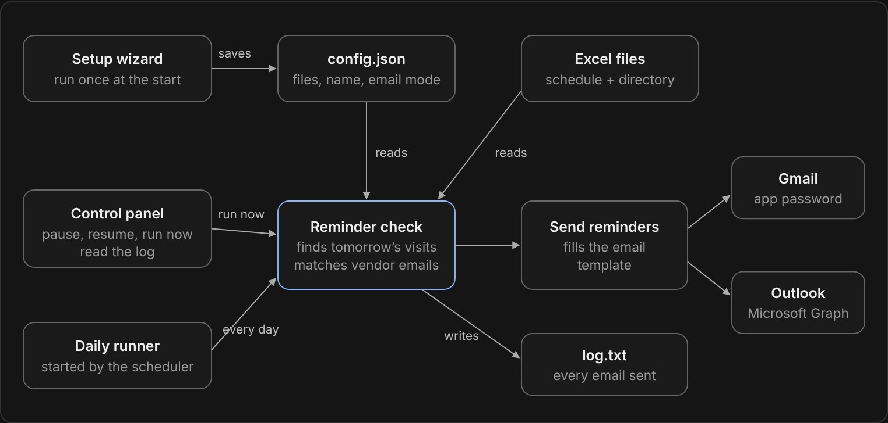

Vendor
Manager
A small desktop app that emails vendors a reminder the day before their visit, straight from the Excel sheet our facilities worker already used.
The story
I work security at a data center, and our facilities worker is the person we go to when something physical goes wrong: broken lights, gates that need maintenance, grass that needs cutting. We talk a lot, and I kept hearing about the same problem. Vendors were showing up late or forgetting their visit completely.
He kept the visit schedule in an Excel sheet, and reminders only happened if he remembered to send them. My first idea was automatic emails through Microsoft. That was out of the question, because IT had the access locked. Online services weren’t an option either, since they couldn’t be trusted with company data.
So I needed something local. I came up with a Python app that runs on his machine and works from the spreadsheet he was already used to.
What I built
Vendor Manager is a small Python desktop app that sends the reminders by itself. Every day it:
- IReads the visit schedule and finds tomorrow’s visits
- IILooks up each vendor’s email in a second sheet, the vendor directory
- IIISends a personal reminder from his own Gmail or Outlook account
- IVWrites every email it sends to a log file
He didn’t have to change anything about how he works. He keeps updating the same spreadsheets and the app takes care of the rest.
The first time, a setup wizard points the app at his two files and connects his email. Gmail uses an app password, and Outlook goes through Microsoft Graph.
The control panel lets him pause it, resume it, or send the reminders right now, and he can read the log to see who got an email.
Real spreadsheets are messy, so I made the reader forgiving. It finds columns by their header name instead of their position, matches vendor names no matter the capitalization, and understands dates typed in different formats or saved as Excel date numbers. The email itself is a plain text template with placeholders, so he can change the wording without touching any code.

To hand it over, I packaged it with PyInstaller into three programs that run on their own: the setup wizard, the control panel, and a background runner that the scheduler starts every day. He doesn’t need Python installed. I also wrote unit tests for the Excel reader, the email sender and the settings, and they run on GitHub Actions every time I push.
What I learned
It felt great helping someone with the knowledge I have.
- ❧Limits shape the solution. With the cloud and outside services ruled out, a small local app was the most trusted option, not a second choice.
- ❧Build around how people already work. Keeping his spreadsheet as the source of truth is the reason he actually used it.
- ❧Handing it over is half the work. The setup wizard, the standalone programs and a log he can read mattered as much as the email code.
- ❧Small tools open doors. He was very happy with it and told everyone about the app, which helped the projects that came after.
Internal tool, shown here with demo data. Code on GitHub